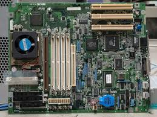

Computer cases and form factors refer to the size, shape, and layout of a computer's physical components. The case, also known as the chassis or tower, houses the internal hardware like the motherboard, power supply, and drives. Form factors determine the dimensions and arrangement of these components, with common types including ATX, Micro-ATX, and Mini-ITX. A larger case typically supports better airflow, more storage space, and powerful hardware, while smaller cases are more compact and suitable for limited spaces. Choosing the right form factor depends on your needs for performance, expandability, and space.

A motherboard is the main circuit board of a computer that connects and allows communication between all other components. It holds the CPU (central processing unit), RAM (memory), storage drives, and expansion cards, and provides connectors for peripherals like keyboards, mice, and monitors. The motherboard also distributes power and allows different parts of the system to work together efficiently. There are different sizes of motherboards, known as form factors, such as ATX, Micro-ATX, and Mini-ITX, each suited for different types of computer builds. Choosing the right motherboard is important because it determines what components and features your computer can support.
